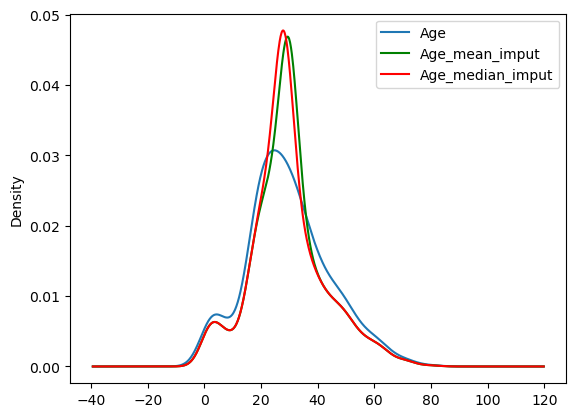
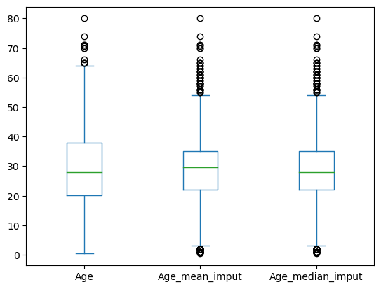

import pandas as pd
import numpy as np
import seaborn as sns
import matplotlib.pyplot as pltMean & Median Imputation
All about Mean & Median Imputation.
- toc: true
- badges: true
- comments: true
- categories: [jupyter]
When we can use - Data is missing completly random - No more the 5% of the variable contain missing
Mean/Median Imputation Assumptions - Data is missing at random
Mean/Median Imputation Advantage - Easy to implement - Fast way of obtaining in complete dataset
Mean/Median Imputation Limitation - Distortion of the original variable distrubtion & variance - Higher percentage of NA, the higher distortion
Improtant Note - If variable is normal distributed then mean imutation is better - If variable is skewed then median imutation is better - Imputation value should be calculated in training set and same value impute in test set
df = pd.read_csv('titanic.csv')
df.head(2)| PassengerId | Survived | Pclass | Name | Sex | Age | SibSp | Parch | Ticket | Fare | Cabin | Embarked | |
|---|---|---|---|---|---|---|---|---|---|---|---|---|
| 0 | 1 | 0 | 3 | Braund, Mr. Owen Harris | male | 22.0 | 1 | 0 | A/5 21171 | 7.2500 | NaN | S |
| 1 | 2 | 1 | 1 | Cumings, Mrs. John Bradley (Florence Briggs Th... | female | 38.0 | 1 | 0 | PC 17599 | 71.2833 | C85 | C |
df.isnull().sum()PassengerId 0
Survived 0
Pclass 0
Name 0
Sex 0
Age 177
SibSp 0
Parch 0
Ticket 0
Fare 0
Cabin 687
Embarked 2
dtype: int64df.isnull().mean()PassengerId 0.000000
Survived 0.000000
Pclass 0.000000
Name 0.000000
Sex 0.000000
Age 0.198653
SibSp 0.000000
Parch 0.000000
Ticket 0.000000
Fare 0.000000
Cabin 0.771044
Embarked 0.002245
dtype: float64#mean
print(df.Age.mean())
df['Age_mean_imput'] = df.Age.fillna(df.Age.mean())29.69911764705882#median
print(df.Age.median())
df['Age_median_imput'] = df.Age.fillna(df.Age.median())28.0df[['Age','Age_mean_imput','Age_median_imput']].tail(5)| Age | Age_mean_imput | Age_median_imput | |
|---|---|---|---|
| 886 | 27.0 | 27.000000 | 27.0 |
| 887 | 19.0 | 19.000000 | 19.0 |
| 888 | NaN | 29.699118 | 28.0 |
| 889 | 26.0 | 26.000000 | 26.0 |
| 890 | 32.0 | 32.000000 | 32.0 |
df[['Age','Age_mean_imput','Age_median_imput']].describe()| Age | Age_mean_imput | Age_median_imput | |
|---|---|---|---|
| count | 714.000000 | 891.000000 | 891.000000 |
| mean | 29.699118 | 29.699118 | 29.361582 |
| std | 14.526497 | 13.002015 | 13.019697 |
| min | 0.420000 | 0.420000 | 0.420000 |
| 25% | 20.125000 | 22.000000 | 22.000000 |
| 50% | 28.000000 | 29.699118 | 28.000000 |
| 75% | 38.000000 | 35.000000 | 35.000000 |
| max | 80.000000 | 80.000000 | 80.000000 |
#Variance
print("variance of original variable",df.Age.var())
print("variance after mean imputation",df.Age_mean_imput.var())
print("variance after median imputation",df.Age_median_imput.var())variance of original variable 211.0191247463081
variance after mean imputation 169.05239993721085
variance after median imputation 169.51249827942328ax = df.Age.plot(kind='kde')
ax.legend()
ax = df.Age_mean_imput.plot(kind='kde',color='green')
ax.legend()
ax = df.Age_median_imput.plot(kind='kde',color='red')
ax.legend()<matplotlib.legend.Legend at 0x2151dc16340>
Here we can see distortion of mean/median imputation is higher than original variable
mean/median imputaion may affect relationship between other variable
df[['Fare','Age','Age_mean_imput','Age_median_imput']].cov()| Fare | Age | Age_mean_imput | Age_median_imput | |
|---|---|---|---|---|
| Fare | 2469.436846 | 73.849030 | 59.162200 | 62.556767 |
| Age | 73.849030 | 211.019125 | 211.019125 | 211.019125 |
| Age_mean_imput | 59.162200 | 211.019125 | 169.052400 | 169.052400 |
| Age_median_imput | 62.556767 | 211.019125 | 169.052400 | 169.512498 |
df[['Age','Age_mean_imput','Age_median_imput']].plot(kind='box')<AxesSubplot:>
after mean/median imputation there are more outlier.
Back to top